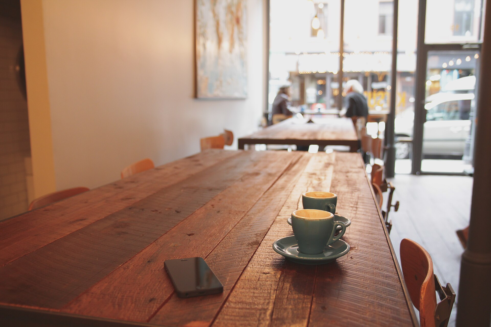

El pulso
de la casa.
Ingresos registrados
Bs 1.284,50Bolivianos · efectivo y QR
Ventas realizadas
42Pedidos registrados
42
Actividad del período
Pico: 12:00 · Bs 186,50
Ventas recientes
| Venta | Hora | Pago |
|---|
No encontramos esa venta
Busca por número, producto o método de pago.
Métodos de pago
Cómo se distribuyen los ingresos del período.
QR 58 %Bs 745,01
Efectivo 42 %Bs 539,49
Solo registro del método utilizado. Kofi no procesa pagos.
Los favoritos de la casa
Unidades del período. Fotografías de referencia, no del menú real.